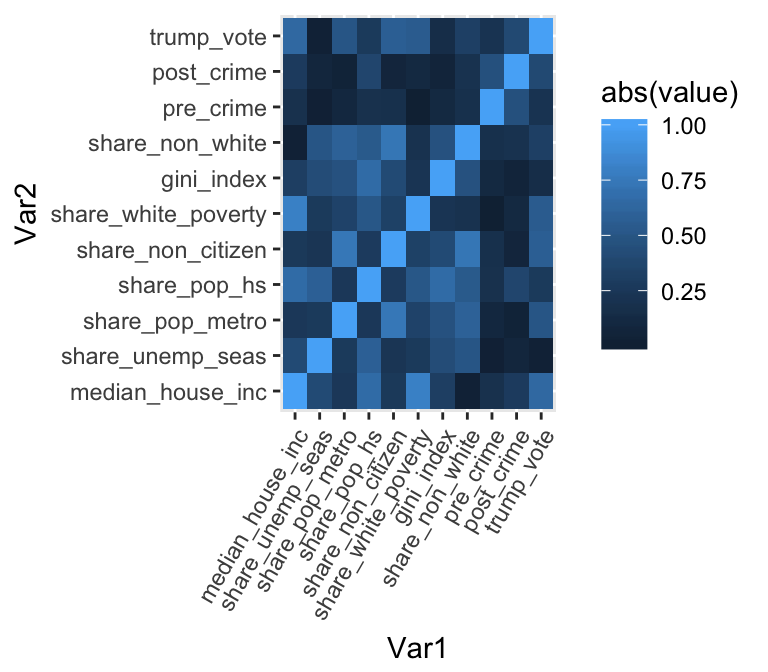
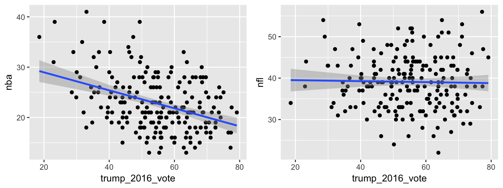
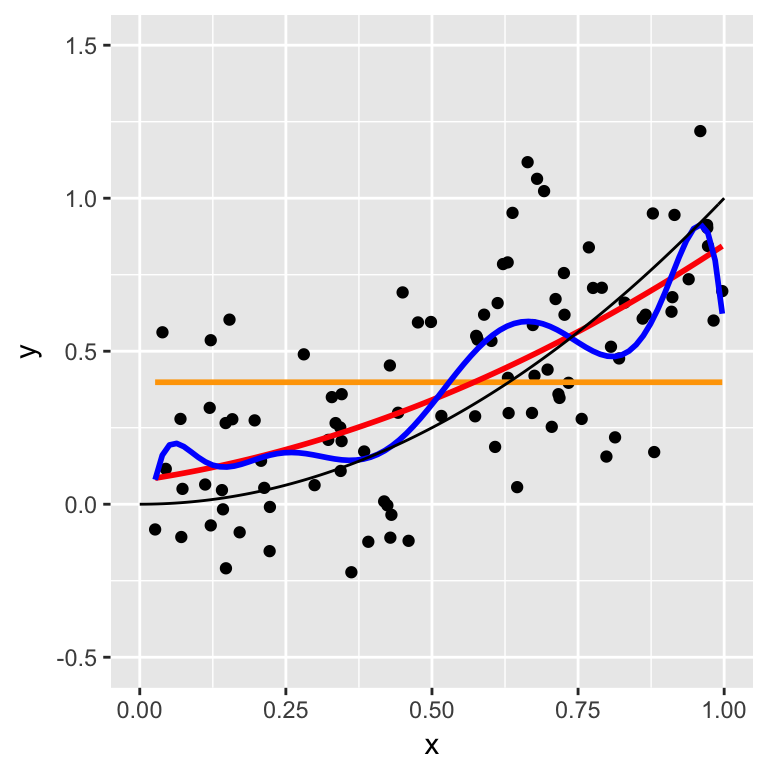

5.4 Homework 2b: Model Building & Evaluation
Directions:
- Install the
leaps,reshape2, &broompackages in your console:install.packages("leaps", dependencies = TRUE)
install.packages("reshape2", dependencies = TRUE)
install.packages("broom", dependencies = TRUE)
Start a new RMarkdown document.
Load the following packages at the top of your Rmd:
dplyr,ggplot2,fivethirtyeight,leaps,reshape2,boot,broomUnlike the foundational & generalizable
ggplotanddplyrsyntax, much of the syntax in this homework is very specialized / context specific. Just keep your eyes on the big ideas - if you get the big ideas it’s easy enough to do a search for the appropriate code.When interpreting visualizations, models, etc, be sure to do so in a contextually meaningful way.
This homework is a resource for you. Record all work that is useful for your current learning & future reference. Further, try your best, but don’t stay up all night trying to finish all of the exercises! We’ll discuss any questions / material you didn’t get to tomorrow.
Goals:
In this homework you will:
apply residual analysis, \(R^2\), and cross validation techniques; and
- explore new concepts in the iterative process of model building & model evaluation:
- multicollinearity;
- subset selection;
- overfitting; and
- bias-variance trade-off.
- multicollinearity;
5.4.1 Warm-up
In January 2017, fivethirtyeight.com published an article on hate crime rates across the US. Load the data hate_crimes they used in this article via the fivethirtyeight package and examine the codebook:
# Load data
data(hate_crimes)
# Check out the codebook
?hate_crimes
We’ll start with a little review of data wrangling, visualization, & modeling.
- Define some new variables
The pre-election hate crime rates (
avg_hatecrimes_per_100k_fbi) are on a scale of 365 days. The post-election hate crime rates (hate_crimes_per_100k_splc) are on a scale of 10 days. Add variablespre_crimeandpost_crimeto the data set that transform these orginal variables to 1 day hate crime rates.Further,
share_vote_trumpis currently on a 0-1 scale. Convert this to a percent on a 0-100 scale. Name the new variabletrump_vote.Before moving on, confirm that the features of your data match those here:
summary(hate_crimes$pre_crime) ## Min. 1st Qu. Median Mean 3rd Qu. Max. NA's ## 0.0007 0.0035 0.0054 0.0065 0.0087 0.0300 1 summary(hate_crimes$post_crime) ## Min. 1st Qu. Median Mean 3rd Qu. Max. NA's ## 0.007 0.014 0.023 0.030 0.036 0.152 4 summary(hate_crimes$trump_vote) ## Min. 1st Qu. Median Mean 3rd Qu. Max. ## 4.0 41.5 49.0 49.0 57.5 70.0- Using syntax (not simply leafing through the data), identify:
- the states with the lowest & highest pre-election hate crime rates;
- the states with the lowest & highest post-election hate crime rate.
- the states with the lowest & highest pre-election hate crime rates;
Skim the fivethirtyeight article. Summarize the drawbacks of the processes with which the pre- and post-election hate crime rates are measured. (These are the best data available, but it’s crucial to understand the limits of our analysis!)
- Outliers
Construct & interpret a visualization of
post_crimerates vstrump_vote.You should notice an outlier. Identify the corresponding state using a
filter(). What do you think about this outlier? Is it the result of a data entry typo or is there something unique about the outlying state?Remove the state corresponding to this outlier from the
hate_crimesdata set - if we didn’t, this one state could skew our analysis. Confirm that your dimensions now match those below. NOTE: States with missing change_rate data are also removed.dim(hate_crimes) ## [1] 46 15 mean(hate_crimes$post_crime, na.rm = TRUE) ## [1] 0.02776
- Starting simple
We can start with a simple research question: how, if at all, are post-election hate crime rates associated with the election results?Construct and visualize a model of
post_crimebytrump_vote.Of course, states with high
post_crimerates might be the same ones with highpre_crimerates, no matter the outcome of the election. With this in mind, incorporatepre_crimeas a covariate in your model (without an interaction):post_crime ~ trump_vote + pre_crime.Compare and contrast the
trump_votecoefficients from your 2 models. What’s the take-home message?
5.4.2 Model Building: Subset selection
In the exercise above, the appropriate model was clear. Our goal was to understand the relationship between post_crime and trump_vote when controlling for pre_crime, thus our model had the form post_crime ~ trump_vote + pre_crime. In other scenarios, the appropriate model is less clear. Consider a new goal: using any or all of the data available to us, develop the “best” model of post_crime rates. To satisfy this goal in general, we have to balance 2 sometimes conflicting criteria:
prediction accuracy
build a model that’s generalizable to the broader population- simplicity
build a model that uses the minimum number of “necessary” predictors. This model- will be easier to interpret;
- eliminates unnecessary noise & multicollinearity;
- cuts costs by not requiring the continued measurement of unnecessary predictors.
- will be easier to interpret;
With these criteria in mind, there are three broad model selection & regularization methods.
Subset selection
Identify a subset of predictors \(x_i\) to include in our model of \(y\).Shrinkage / regularization
Fit a model with all \(x_i\), but shrink / regularize their coefficients toward or to 0 to create sparse models.Dimension reduction
Reduce the number of predictors by creating a new set of predictors that are linear combinations of the \(x_i\). (Thus the predictors tend to lose some meaning.)
We’ll only discuss the first of these - subset selection! (You’ll address the third, dimension reduction, in your machine learning module.) In the context of the hate_crimes data, our next goal is to build the “best” model of post_crime using the available predictors. Our algorithms require a new data set, hate_sub, that removes the old redundant predictors (eg: share_vote_trump), the state label (it’s not a predictor), & states with missing data:
hate_sub <- hate_crimes %>%
select(-c(state, hate_crimes_per_100k_splc, avg_hatecrimes_per_100k_fbi, share_vote_trump))
hate_sub <- na.omit(hate_sub)
# Confirm that your datasets have these dimensions!
dim(hate_crimes)
## [1] 46 15
dim(hate_sub)
## [1] 44 11The following visualization captures the correlation between each of the 10 predictors with post_crime as well as with each other. Our goal will be to whittle the set of predictors down to only the essentials.
library(reshape2)
# Correlation matrix
cor_matrix <- round(cor(hate_sub), 2)
# Reshape the matrix
cor_melt <- melt(cor_matrix)
# Visualize the correlation matrix
ggplot(cor_melt, aes(x=Var1, y=Var2, fill=abs(value))) +
geom_tile() +
theme(axis.text.x = element_text(angle = 60, hjust = 1))
- Forward stepwise selection: by hand
We’ll discuss two subset selection approaches. The first is forward stepwise selection. To get a feel for this intuitive algorithm, we’ll do the first few steps by hand.There are 10 possible predictors of
post_crime. Fit 10 separate models using these predictors. Record the predictor in the model with the highest \(R^2\).summary(lm(post_crime ~ median_house_inc, hate_sub))$r.squared summary(lm(post_crime ~ share_unemp_seas, hate_sub))$r.squared summary(lm(post_crime ~ share_pop_metro, hate_sub))$r.squared summary(lm(post_crime ~ share_pop_hs, hate_sub))$r.squared summary(lm(post_crime ~ share_non_citizen, hate_sub))$r.squared summary(lm(post_crime ~ share_white_poverty, hate_sub))$r.squared summary(lm(post_crime ~ gini_index, hate_sub))$r.squared summary(lm(post_crime ~ share_non_white, hate_sub))$r.squared summary(lm(post_crime ~ pre_crime, hate_sub))$r.squared summary(lm(post_crime ~ trump_vote, hate_sub))$r.squaredKeep the predictor you identified in part a in your model. Identify which of the other 9 predictors would produce the greatest increase in \(R^2\) if added to this model. This will require you to fit 9 models like this:
post_crime ~ part_a_predictor + other_predictor.Keep the predictors you identified in parts a & b in your model. Identify which of the other 8 predictors would produce the greatest increase in \(R^2\) if added to this model. This will require you to fit 8 models like this:
post_crime ~ part_a_predictor + part_b_predictor + other_predictor.
- Forward stepwise selection in RStudio
Now that you have the hang of it, let’s complete our forward stepwise selection using theregsubsets()function in theleapspackage.Execute the following code & examine the output. The last table in
forward_summaryuses asterisks (*) to indicate the order in which it added variables to the model. Confirm that these match your work from above.# Do forward stepwise selection # nvmax = 10 indicates that we want to eventually use all 10 predictors forward_step <- regsubsets(post_crime ~ ., hate_sub, method = "forward", nvmax = 10) # Store & print the summary information forward_summary <- summary(forward_step) forward_summaryForward stepwise selection presents us with 10 models, starting with a model with only 1 predictor and adding variables one by one until all 10 predictors are in the model.
forward_summaryandforward_stepcontain information about each of these models:# R^2 values for each model forward_summary$rsq # R^2 value for the model with 5 predictors forward_summary$rsq[5] # Coefficients of the model with 5 predictors) coef(forward_step, 5)Construct a visualization of the \(R^2\) values for the models of each subset size (1–10):
forward_rsq <- data.frame(subset_size = c(1:10), rsq = forward_summary$rsq) ggplot(forward_rsq, aes(x = subset_size, y = rsq)) + geom_point() + geom_line()This plot confirms what we already know: \(R^2\) increases as we add new variables to our model. We can also use it to perform subset selection. Explain why this plot suggests that the 6-predictor model (or even the 3-predictor model) is optimal. Think: How does this compare to the 1-predictor and 10-predictor models?
Finally, use
coef()to identify which predictors are part of the 6-predictor model.
- Forward selection details
There’s often multicollinearity among the predictors in a data set (ie. the predictors are correlated with one another). Why might this explain the plateau-ing in the \(R^2\) plot?
Note that
share_non_whiteentered the model beforeshare_pop_hsthough we’ve seen that, alone, the latter is a better predictor ofpost_crime. Explain how this happened and why, accordingly, the “best” forward selection model might not include the “best” predictors.Backward selection is another stepwise technique. Can you guess how this differs from forward selection?
- Best subset selection
Best subset selection provides an alternative to forward stepwise selection. As the name suggests, best subset selection takes the following steps. Suppose there are \(p\) possible predictors:- Build all possible models that use any combination of predictors \(x_i\).
- With respect to some chosen criterion (eg: \(R^2\), CV error, etc):
- Find the “best” model with 1 predictor.
- Find the “best” model with 2 predictors.
…
- Find the “best” model with \(p\) predictors.
- Find the “best” model with 1 predictor.
- Choose among the best of the best models.
Prove that there are 1,024 possible models we could construct using different combinations of the predictors in
hate_sub(not including interaction or transformation terms).We can again use
regsubsets()to perform best subset selection:# Perform best subsets best_subsets <- regsubsets(post_crime ~ ., hate_sub, nvmax = 10) # Store the summary information best_summary <- summary(best_subsets) best_summaryConstruct a visualization of the \(R^2\) values for the models of each subset size (1–10).
With this info in hand, identify which subset size you think is ‘optimal’ and which variables are part of this optimal subset. Does this set of variables match those suggested by the forward stepwise selection? (It might, it might not!)
What are the trade-offs between the forward selection and best subsets algorithms?
- Build all possible models that use any combination of predictors \(x_i\).
- Final model evaluation
After identifying your “optimal” set of predictors…- Fit this model in R (using the
hate_crimesnothate_subdata). Examine the coefficients - what’s the take-home message?
- Report & interpret the \(R^2\) value for this model.
- Calculate & interpret the 10-fold CV error for this model.
- Construct and comment on two plots that help you assess whether your model meets the assumption that \(\varepsilon \sim N(0, \sigma^2)\).
- Fit this model in R (using the
5.4.3 Bias-variance trade-off
In today’s discussion & homework, we’ve seen that there’s a goldilocks problem in model building: if we use too few predictors, we lose some explanatory power; if we use too many, we risk overfitting the model to our own sample data. This conundrum is related to the bias-variance trade-off.
Suppose the population model of \(y\) is a quadratic function of \(x\):
\[y = f(x) + \varepsilon = x^2 + \varepsilon \;\;\;\; \text{ where } \varepsilon \sim N(0, 0.3^2)\]
In practice, you would not have this information. Instead, you would take a sample of, say, size \(n=100\) from this population and observe:

You consider 3 different models of \(y\). These are plotted below against the true model (\(f(x) = x^2\)) for comparison (black line).
\[\begin{array}{lcrl} \text{model 1 (orange): } & & \hat{f}(x)& = \hat{\beta}_0 \\ \text{model 2 (red): } & & \hat{f}(x)& = \hat{\beta}_0 + \hat{\beta}_1 x + \hat{\beta}_2 x^2\\ \text{model 3 (blue): } & & \hat{f}(x)& = \hat{\beta}_0 + \hat{\beta}_1 x + \hat{\beta}_2 x^2 + \cdots + \hat{\beta}_{10} x^{10}\\ \end{array}\]

Of course, had you gotten a different sample of data, your results would be different. Press play & examine the simulation below:
- Which model appears to vary the most from sample to sample?
- Which model appears to be the least biased in its approximation of the relationship between \(x\) and \(y\)?
We can measure the bias-variance trade-off using the mean squared error. (Careful: mean squared error differs from mean squared prediction error.) First some notation. For some value \(x^*\) of predictor \(x\), let
\[\begin{split} f(x^*) & = \text{ value of the "true" model at } x^* \\ \hat{f}(x^*) & = \text{ value of the estimated model at } x^* \\ \end{split}\]
As in the simulation above, the sample model \(\hat{f}(x)\) varies from sample to sample. At any \(x^*\), the quality of \(\hat{f}(x^*)\) can be measured by the mean squared error, the average or expected squared difference between \(f(x^*)\) and \(\hat{f}(x^*)\):
\[\begin{split} \text{MSE}\left(\hat{f}(x^*)\right) & = E\left[\left(f(x^*) - \hat{f}(x^*) \right)^2\right] = \text{Var}(\hat{f}(x^*)) + \left[\text{Bias}(\hat{f}(x^*))\right]^2 \\ \end{split}\]
Properties of MSE
- The smaller the MSE the better the model estimate.
- MSE can be partitioned into two key pieces. Variance \(\text{Var}\left(\hat{f}(x^*)\right)\) measures the variability in \(\hat{f}(x^*)\) from sample to sample. Bias measures the average or expected difference between \(f(x^*)\) and \(\hat{f}(x^*)\): \[\text{Bias}\left(\hat{f}(x^*)\right) = E\left(f(x^*) - \hat{f}(x^*) \right)\]
- Ideally, \(\hat{f}(x^*)\) is unbiased (bias=0) and variance is small.
Let’s apply these ideas to compare our 3 models using a simulation study. The syntax is complicated - we’ll take small steps in this direction during tomorrow’s class. For now, focus on the big ideas. If you have time, pick through the code. Our simulation proceeds as follows:
Generate 1000 separate samples of 100 \((x,y)\) values from the underlying “true” population model, \(f(y) = x^2 + \varepsilon\) where \(\varepsilon \sim N(0, 0.3^2)\).
# Set the random number seed set.seed(2018) # Simulate 1000 samples of size 100 sample <- rep(c(1:1000), each = 100) x <- runif(100*1000) y <- x^2 + rnorm(100*1000, mean = 0, sd = 0.3) sim_data <- data.frame(sample, x, y) # Check it out head(sim_data)Using each of the 1000 separate samples, fit model 1. Subsequently, from each model, calculate the prediction \(\hat{f}(x^*)\) of \(y\) at \(x^*=0.9\). This produces 1000 total model 1 predictions (
x), 1 from each sample.mod_1_pred <- sim_data %>% group_by(sample) %>% do(lm(y ~ x, data = .) %>% predict(., newdata = data.frame(x = 0.9)) %>% tidy())Repeat for models 2 & 3.
mod_2_pred <- sim_data %>% group_by(sample) %>% do(lm(y ~ poly(x, 2, raw = TRUE), data = .) %>% predict(., newdata = data.frame(x = 0.9)) %>% tidy()) mod_3_pred <- sim_data %>% group_by(sample) %>% do(lm(y ~ poly(x, 10, raw = TRUE), data = .) %>% predict(., newdata = data.frame(x = 0.9)) %>% tidy())
- Calculating MSE
Consider the 1000 predictions, \(\hat{f}(x^*)\) at \(x^*=0.9\), calculated from model 2. These predictions are stored as variablexinmod_2_pred.- Check out the first 6 sample predictions & construct a histogram of all 1000 model 2 predictions.
- Variance: calculate the variance among the 1000 model 2 predictions.
- Bias: calculate the average difference between the true model value (\(f(0.9) = 0.9^2 = 0.81\)) & the model predictions.
- Combining parts b and c, calculate the (estimated) mean square error for model 2.
- Check out the first 6 sample predictions & construct a histogram of all 1000 model 2 predictions.
- Visually comparing model MSE
Visually compare the 1000 predictions for each of the 3 models:
# Combine all predictions into a single data frame sim <- data.frame(est = c(mod_1_pred$x, mod_2_pred$x, mod_3_pred$x), mod = as.factor(rep(1:3, each = 1000))) head(sim) # Density plots of the predictions from each model ggplot(sim, aes(x = est, fill = mod)) + geom_density(alpha = 0.5) + geom_vline(xintercept = 0.81)Which model produces the most biased estimates of \(f(x^*) = 0.81\)? The least biased? Why does this make intuitive sense?
Which model produces the most variable / least stable estimates of \(f(x^*)\)? The least variable? Why does this make intuitive sense?
Based on this plot alone, which model would you choose?
- Comparing models via MSE
We can support these observations by calculating the variance, bias, and MSE for each model. You did this “by hand” above for model 2. The
group_by()andsummarize()functions indplyrprovide a shortcut:sim %>% group_by(mod) %>% summarize(bias = mean(0.81 - est), var = var(est)) %>% mutate(mse = bias^2 + var)Which model produces the most biased estimates?
Which model produces the most variable / least stable estimates?
Order the models from best to worst with respect to their MSE (combined bias and variance).
5.4.4 Extra
IF you finish early and want to play around with the data some more, carefully read the fivethirtyeight article that uses the hate_crimes data. Do you agree with the authors’ conclusions? (Answering this question might require you to fit new models.)
IF you have even more time, revisit the bodyfat data from today’s class. Build a model using your new model building & evaluation tools.
IF you have even more time & have a decent background in probability theory, prove that MSE can be written as the sum of Variance & Bias2.